Publications
| 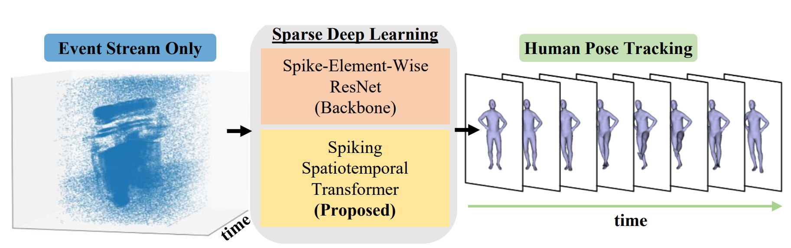 |
Event-based Human Pose Tracking by Spiking
Spatiotemporal Transformer
Shihao Zou, Yuxuan Mu, Xinxin Zuo, Sen Wang, Li Cheng. In arXiv 2023. [Paper] [Code] |
| 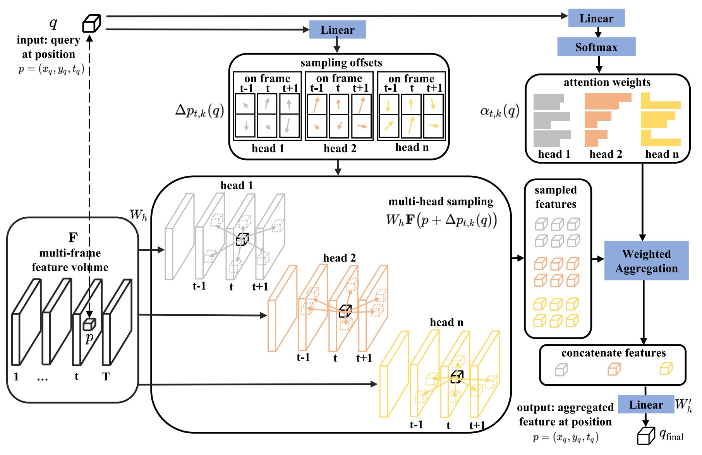 |
Snipper: A Spatiotemporal Transformer
for Simultaneous Multi-Person 3D Pose Estimation Tracking and Forecasting on a
Video Snippet
Shihao Zou, Yuanlu Xu, Chao Li, Lingni Ma, Li Cheng, Minh Vo. In IEEE TCSVT 2023 (JCR Q1). [Paper] [Code] |
| 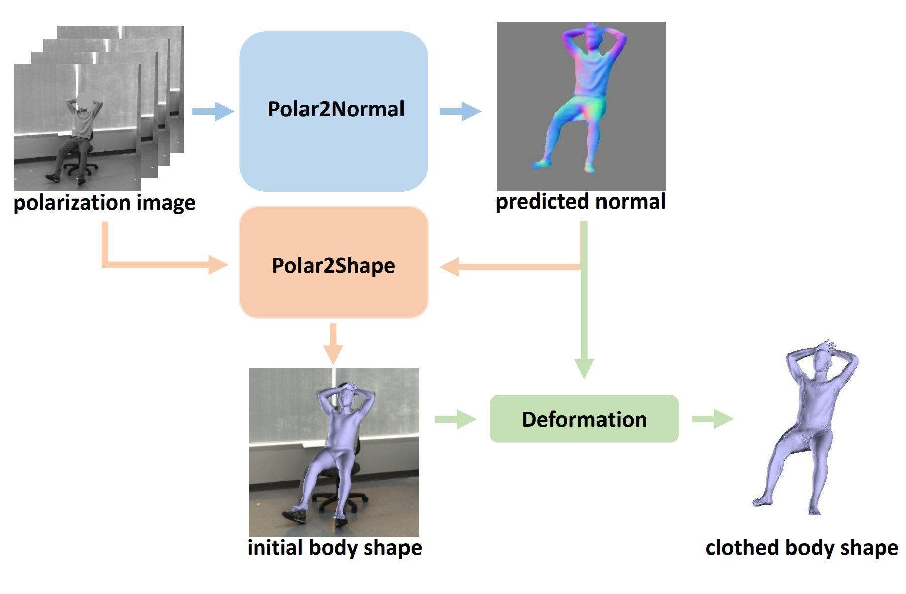 |
Human Pose and Shape Estimation from Single Polarization Images
Shihao Zou, Xinxin Zuo, Sen Wang, Yiming Qian, Chuan Guo, Li Cheng. In IEEE TMM 2022 (JCR Q1). [Paper] [Code] |
| 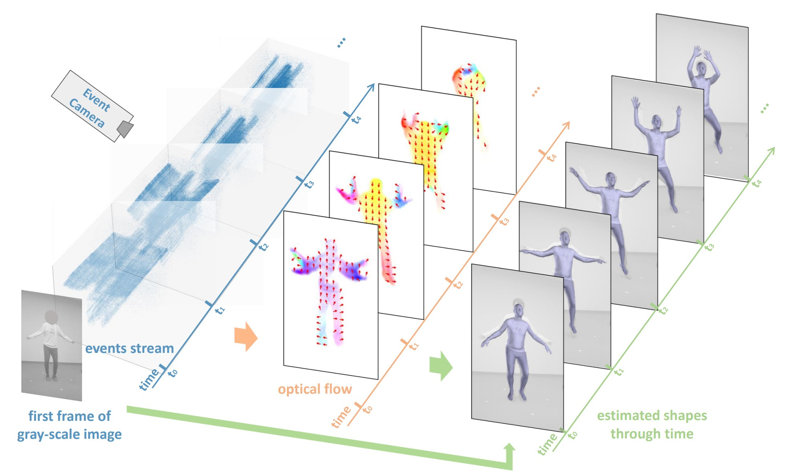 |
EventHPE: Event-based 3D Human Pose Estimation
Shihao Zou, Chuan Guo, Xinxin Zuo, Sen Wang, Pengyu Wang, Xiaoqin Hu, Shoushun Chen, Minglun Gong, Li Cheng. In ICCV 2021. [Paper] [Code] |
| 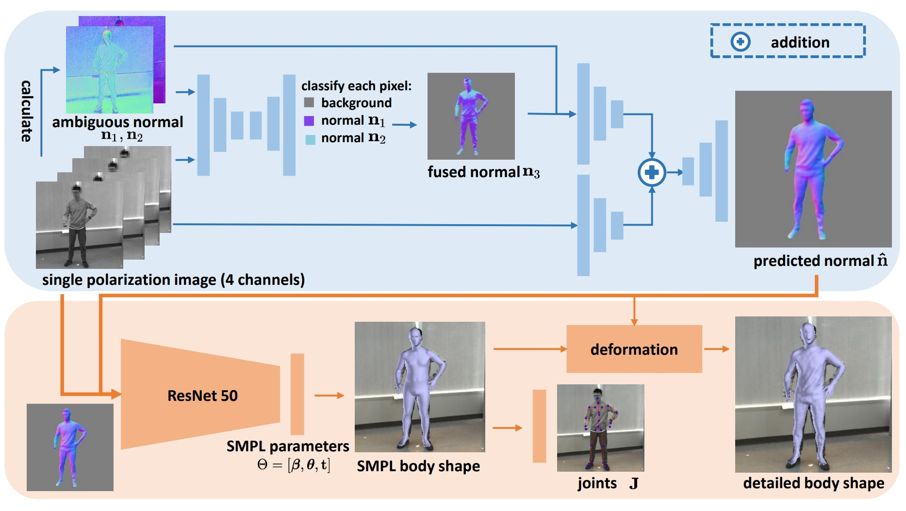 |
3D Human Shape Reconstruction from a Polarization Image
Shihao Zou, Yiming Qian, Sen Wang, Xinxin Zuo, Chi Xu, Minglun Gong, Li Cheng. In ECCV 2020. [Paper] [Code] |
| 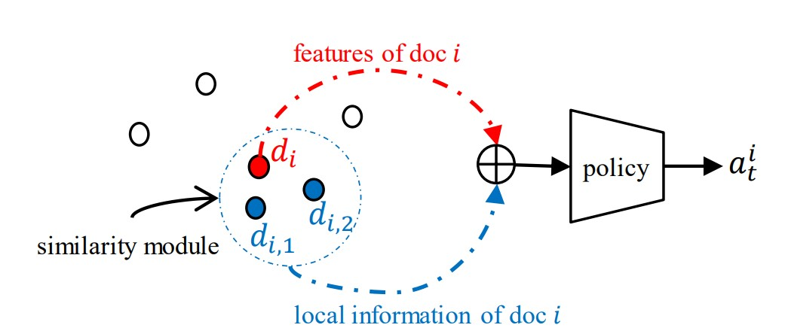 |
Multi-agent Reinforced Learning to Rank
Shihao Zou, Zhonghua Li, Mohammad Akbari, Jun Wang, Peng Zhang. In CIKM 2020. [Paper] |
| 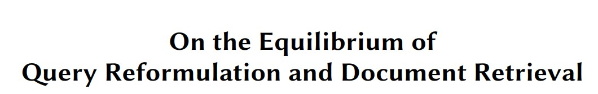 |
On the Equilibrium of Query Reformulation and Document Retrieval
Shihao Zou, Guanyu Tao, Jun Wang, Weinan Zhang, Dell Zhang. In ICTIR 2018. [Paper] |
| 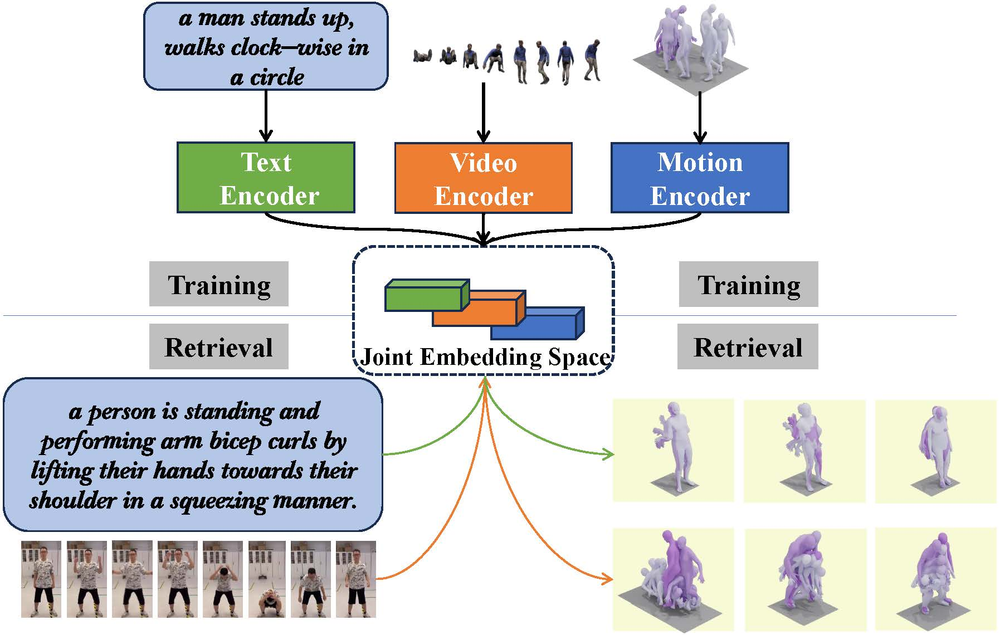 |
Tri-Modal Motion Retrieval by Learning a Joint Embedding Space
Kangning Yin, Shihao Zou, Yuxuan Ge, Zheng Tian. In CVPR 2024. [Paper] [Code] |
| 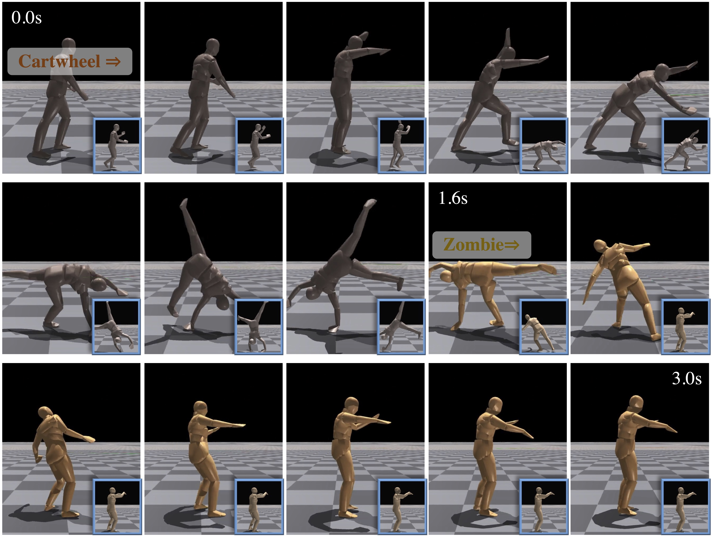 |
RACon: Retrieval-Augmented Simulated Character Locomotion Control
Yuxuan Mu, Shihao Zou, Kangning Yin, Zheng Tian, Li Cheng, Weinan Zhang, Jun Wang. In ICME 2024. [Paper] [Code] |
| 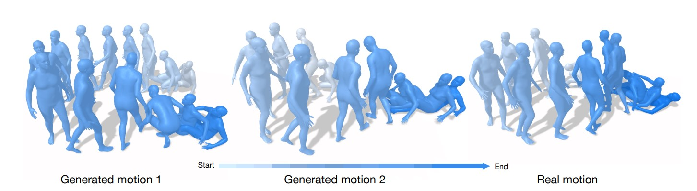 |
Diverse and Natural 3D Human Motions from Text
Chuan Guo, Shihao Zou, Xinxin Zuo, Sen Wang, Wei Ji, Li Cheng. In CVPR 2022. [Paper] |
| 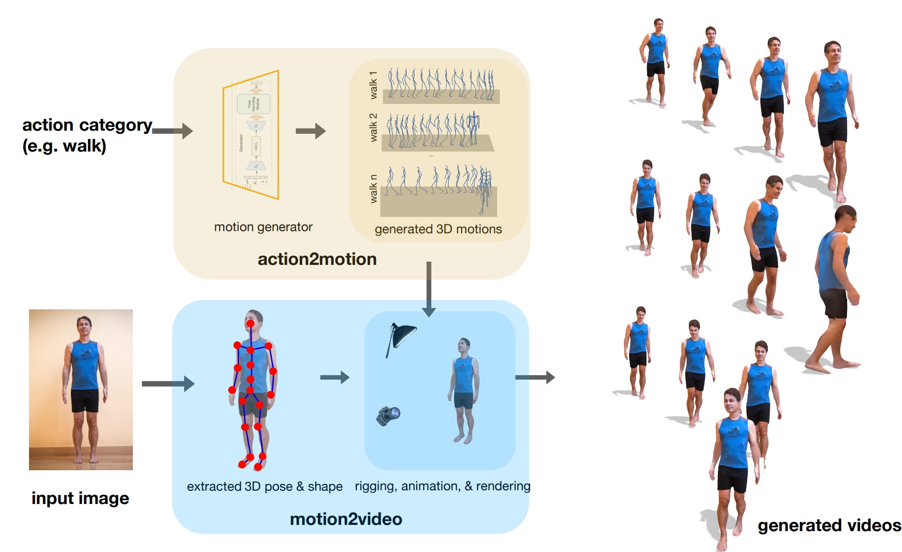 |
Action2video: Generating Videos of Human 3D Actions
Chuan Guo, Xinxin Zuo, Sen Wang, Xinshuang Liu, Shihao Zou, Minglun Gong, Li Cheng. In IJCV 2022 (JCR Q1). [Paper] |
| 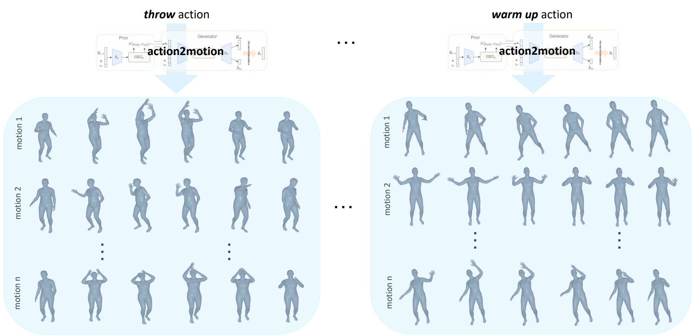 |
Action2Motion: Conditioned Generation of 3D Human Motions
Chuan Guo, Xinxin Zuo, Sen Wang, Shihao Zou, Qingyao Sun, Annan Deng, Minglun Gong, Li Cheng. In ACM MM 2020. [Paper] |
| 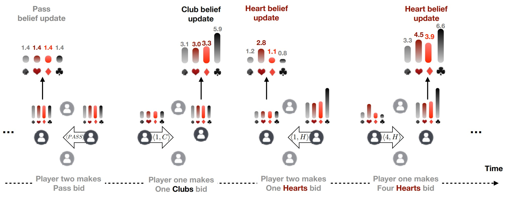 |
Learning to Communicate Implicitly By Actions
Zheng Tian, Shihao Zou, Ian Davies, Tim Warr, Lisheng Wu, Haitham Bou Ammar, Jun Wang. In AAAI 2020 (spotlight). [Paper] |
| 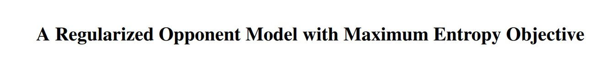 |
A Regularized Opponent Model with Maximum Entropy Objective
Zheng Tian, Ying Wen, Zhichen Gong, Faiz Punakkath, Shihao Zou, Jun Wang. In IJCAI 2019. [Paper] |
Services
- Reviewer @ AAAI2024, ICCV2023, CVPR2022, ECCV2022, CVPR2021, ICCV2021, AAAI2021, IJCAI2021
- Invited Reviewer @ IEEE TMM, IEEE TCSVT, PR, IEEE Sensors
Experiences
- Jun 2023 ~ Sept 2023 - Research Internship @ Huawei 2012 Labs, Canada
- Jul 2022 ~ Nov 2022 - Research Scientist Intern @ Meta Reality Labs, Switzerland
- May 2021 ~ Dec 2021 - Research Scientist Intern @ Meta Reality Labs, Canada
- Sep 2018 ~ Jan 2019 - Research Internship @ Huawei 2012 Labs, China